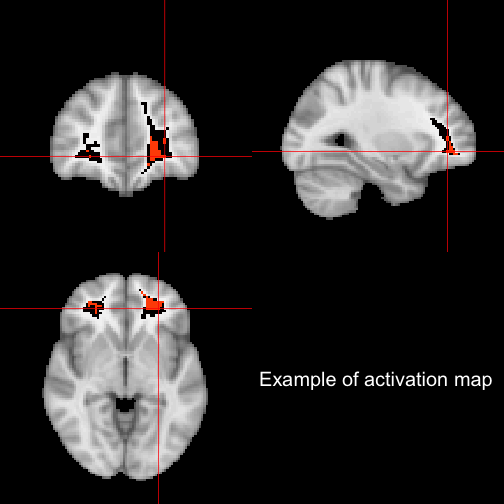
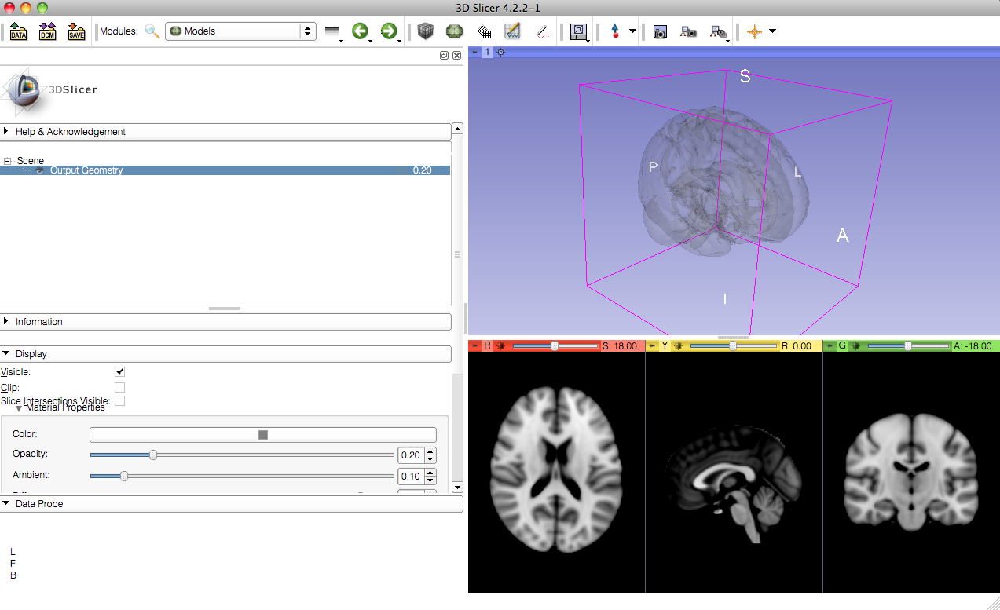

About Me
PhD student in Biostatistics at Johns Hopkins Bloomberg School of Public Health with Ciprian Craniceanu
ScM 2010 (Brian Caffo)
Worked in fMRI/CT for last 4 years
Part of the SMART group, and ADHD-200 competition winners
@StrictlyStat (github: muschellij2)
Johns Hopkins Bloomberg School of Public Health
PhD student in Biostatistics at Johns Hopkins Bloomberg School of Public Health with Ciprian Craniceanu
ScM 2010 (Brian Caffo)
Worked in fMRI/CT for last 4 years
Part of the SMART group, and ADHD-200 competition winners
knitr [Xie (2013)] - compiles R code within markdownslidify [Vaidyanathan (2012)] - makes awesome slide decks (in html)knitcitations [Boettiger (2013)] - allows my BibTeX to cite in knitrRStudio [RStudio (2013)] - integrated R IDE


Potential biomarkers - early identification
Outcome measures
What kind of data do we have?
Visualization and presentation of these data can be improved with the use of 3D tools.
R - http://cran.r-project.org/3D (neuroimaging) figures can be created/exported easily
Standalone objects are needed for end-users/readers
Webpages are a good medium for these
We need to figure how to effectively incorporate into pipelines/publications
Using image.nifti from oro.nifti [Whitcher et. al. (2011)] package:
Read left to right like a book

Overall, most methods keep temporal or 2D spatial components fixed and vary the other.
Using orthographic from oro.nifti package:

RR? - Example### read in brain image
tmp <- readNIfTI("MNI152_T1_2mm_brain.nii", reorient = FALSE)
dtemp <- dim(tmp)
### make the surface object - RGL renders
contour3d(tmp, x = 1:dtemp[1], y = 1:dtemp[2], z = 1:dtemp[3], level = 4500,
alpha = 0.15)
### this would be the ``activation'' or surface you want to render here
### just taking the upper WM from the template image
contour3d(tmp, level = c(8200, 8250), alpha = c(0.5, 0.8), add = TRUE, color = c("yellow",
"red"))
### add text
text3d(x = dtemp[1]/2, y = dtemp[2]/2, z = dtemp[3] * 0.98, text = "Top")
text3d(x = dtemp[1] * 0.98, y = dtemp[2]/2, z = dtemp[3]/2, text = "Right")
### export this to a webpage
writeWebGL_split(dir = file.path(outdir, "webGL"), width = 700, height = 500,
template = file.path(outdir, "my_template.html"))
R?
Exportable
(Note - current figures do not have all these qualities )
rglWe do exploratory data analysis / quality control mainly only in 2D
Some investment in Papers/Presentations are not generally accepted

R!knitr is working - webgl hook
shiny integration is possible, but slow depending on system
slidify works with it (used in this presentation)
R has a good interface - other tools are availablergl objects, but use with caution
Stein J, Jewison N, Topol, Crane N, Frey L, Picon M, Mann P, Morris O, Harnick S, Williams J and others (1964).
Fiddler on the Roof.
Crown. Boettiger C (2013).
knitcitations: Citations for knitr markdown files.
R package version 0.3-3, http://CRAN.R-project.org/package=knitcitations. Xie Y (2013).
knitr: A general-purpose package for dynamic report generation in
R.
R package version 1.1.4, http://yihui.name/knitr/. Feng D and Tierney L (2008).
“Computing and Displaying Isosurfaces in R.”
Journal of Statistical Software, 28(1).
http://www.jstatsoft.org/v28/i01/. Whitcher B, Schmid VJ and Thornton A (2011).
“Working with the DICOM and NIfTI Data Standards in R.”
Journal of Statistical Software, 44(6), pp. 1–28.
http://www.jstatsoft.org/v44/i06/. Adler D and Murdoch D (2013).
“rgl: 3D visualization device system (OpenGL).”
R package version 0.93.928, http://CRAN.R-project.org/package=rgl. RStudio (2013).
“RStudio: Integrated development environment for R (Version 0.97.320).”
[Computer software]. Retrieved March 6, 2013.
http://www.rstudio.org/. Vaidyanathan R (2012).
slidify: Generate reproducible html5 slides from R markdown.
R package version 0.3.3, http://ramnathv.github.com/slidify/. Sweeney E, Shinohara R, Shea C, Reich D and Crainiceanu C (2012).
“Automatic Lesion Incidence Estimation and Detection in Multiple Sclerosis
Using Multisequence Longitudinal MRI.”
American Journal of Neuroradiology.

From https://github.com/xtk/SlicerWebGLExport/blob/master/README.md. Shows exportability.
(Left 3D Slicer, Right - Google Chrome)

PythonR/Explanation?R adaptation of OpenGLplot3d, hist3d, text3d, etc.writeWebGL - rgl function that allows you to write to webGLReal Life Example:
SubLIME is a MS lesion detection algorithm [Sweeney et. al. 2012].
MS - SUBLIME
before 3D rendering - didn't notice misregistration

So RGL rendering is perfect, right?